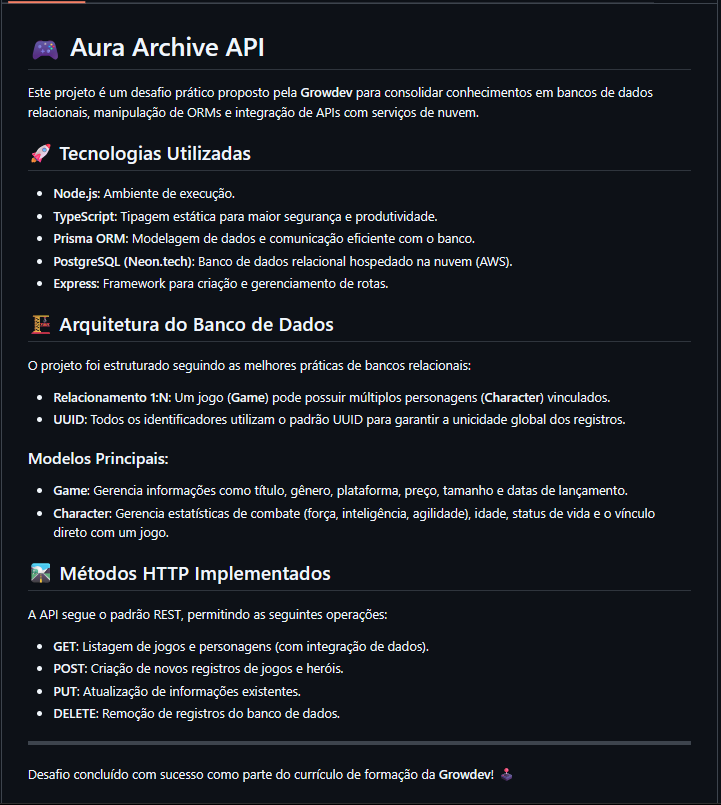
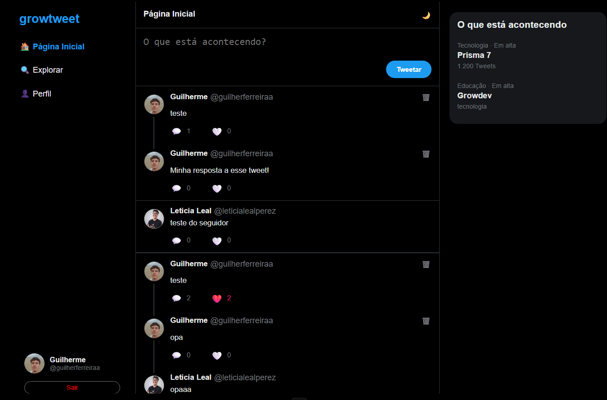
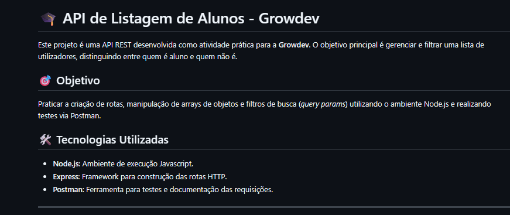
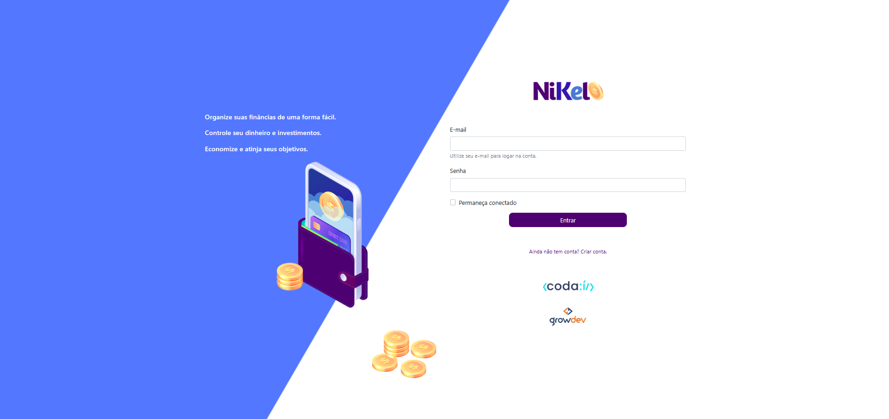

Olá, eu sou o Guilherme Ferreira
Estudante de Desenvolvimento Full Stack na Growdev
Ver Meus Projetos
Estudante de Desenvolvimento Full Stack na Growdev
Ver Meus ProjetosOlá! Sou o Guilherme Ferreira. Minha curiosidade em entender o que acontecia 'por trás das telas' me trouxe até aqui: uma transição de carreira focada no desenvolvimento de software. Atualmente, através da Growdev, estou consolidando minha base técnica em todo o ecossistema Full Stack.
Mais do que aprender linguagens como JavaScript e TypeScript, meu foco é dominar a lógica e as ferramentas que resolvem problemas reais, como Node.js, React e Docker. Sou movido por desafios e busco minha primeira oportunidade para aplicar minha dedicação e evoluir junto com um time de tecnologia.

Gerenciamento de biblioteca de games utilizando Node.js e TypeScript. Foco em arquitetura limpa e performance.
Réplica da interface da Netflix desenvolvida durante a formação GrowDev, focando em Grid e Flexbox.

Uma réplica da rede social X (antigo Twitter) feita em REACT

Atividade para criar uma API no Postman para listar alunos e não alunos na Growdev.

Site de um banco para monitoramento de entradas e saídas. Meu primeiro projeto Growdev.